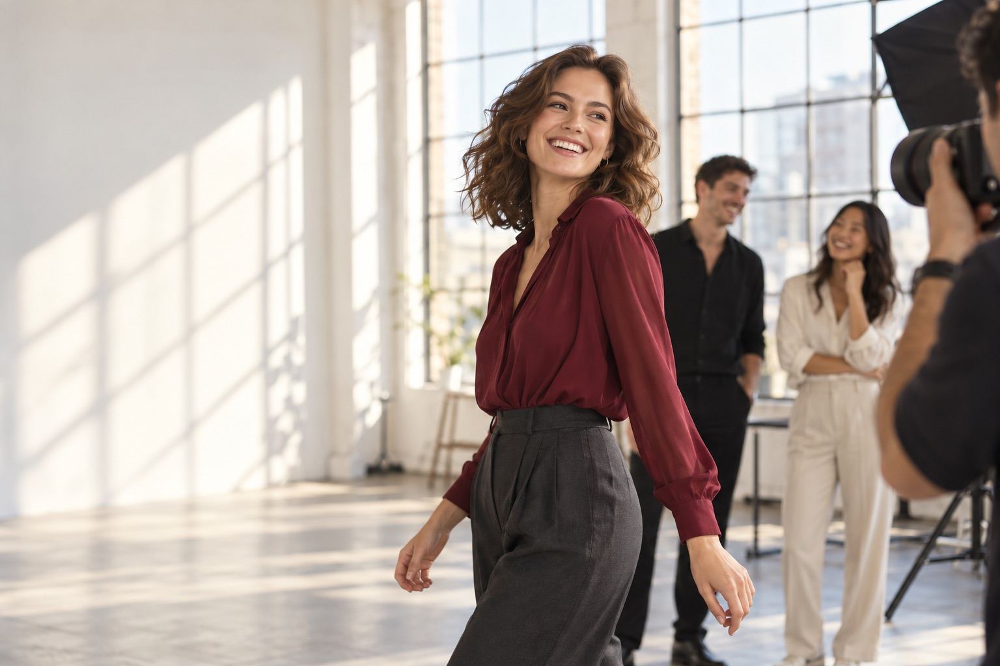

Смелость через практику
Импровизация, упражнения в паре и первые выходы перед группой помогают привыкать к вниманию окружающих. Без требования сразу быть уверенным — каждый осваивается в своём темпе.
Школа моделинга и актёрского мастерства · Москва
Свобода проявляться.
В кадре и в жизни.
90 минут в студии бесплатно. Без обязательства покупать курс.

Для себя, для камеры,
для давно отложенной мечты.
Для нового опыта и собственной подачи
Хотите освоить позирование, свободнее говорить о себе или сделать первый шаг в моделинге? Начнём с базы и практики, на которой можно пробовать разные роли.
Попробовать на бесплатном занятииПодростки и взрослые занимаются отдельно. Доступную группу и расписание обсудим при записи.
Занятия дают пространство для новых ролей, общения и небольших выступлений. Здесь можно пробовать, ошибаться и постепенно находить свою подачу.
Импровизация, упражнения в паре и первые выходы перед группой помогают привыкать к вниманию окружающих. Без требования сразу быть уверенным — каждый осваивается в своём темпе.
Осанка, выразительная речь и умение представить себя пригодятся на учёбе, выступлениях и в повседневном общении. Даже если моделинг останется увлечением.
Совместные задания, репетиции и творческие упражнения дают повод общаться, поддерживать друг друга и видеть, как из отдельных попыток складывается результат.
Для подростков 13–17 лет. Участие и комфортный темп обсуждаем с родителем и подростком.
Первый шаг без оплаты
Бесплатное первое занятие — чтобы понять, нравится ли вам этот опыт.
Хочу на первое занятиеРасскажете, зачем пришли. Преподаватель объяснит, с чего начнётся практика.
Простые упражнения на осанку, походку и позирование. Можно ошибаться и задавать вопросы.
Разберём впечатления, программу и условия. Решение об обучении остаётся за вами.
Четыре направления
в одной программе.
Двигаемся, пробуем, снимаем и обсуждаем. На занятиях есть место первым неловким попыткам — и удовольствию от того, что начинает получаться.
Почувствовать тело и найти свою уверенную походку.
Начинаем с разминки и простых проходок. Соединяем шаги, меняем темп, учимся останавливаться и разворачиваться. Преподаватель помогает заметить привычки в движении и даёт конкретные упражнения.
Что попробуете: небольшую проходку с поворотом и собственной подачей.
Понимать, что делать в кадре — от взгляда до положения рук.
Пробуем позы стоя и сидя, работаем с направлением света и выражением лица. Смотрим учебные кадры и разбираем, как небольшое изменение движения влияет на фотографию.
Что попробуете: несколько разных образов и поз, которые можно повторить на следующей съёмке.
Позволить себе быть разным и свободнее выражать эмоции.
Выполняем упражнения на внимание, пробуем короткие этюды и реакции на партнёра. Учимся слышать друг друга, выражать состояние через голос и движение, продолжать сцену без готового сценария.
Что попробуете: короткую импровизацию в паре или перед группой.
Говорить о себе так, чтобы вас было интересно слушать.
Выбираем, что важно рассказать о себе. Работаем над темпом речи, паузами, взглядом и жестами. Пробуем выступить и записать короткое представление, затем обсуждаем впечатление.
Что попробуете: самопрезентацию, которую можно доработать для знакомства, выступления или кастинга.
Это содержание практики, а не обещание одинакового результата. Подростки 13–17 лет и взрослые занимаются отдельно. Расписание и состав доступной группы уточняются.
Ваш ритм занятийДва раза в неделю по 90 минут
Знакомство с упражнением → практика → обратная связь. Срок обучения и порядок тем согласуем до записи.
Попробовать на бесплатном занятииЖивые занятия.
Настоящие попытки.
От знакомства с группой до первых упражнений.
Как преподаватель помогает найти позу и подачу.
Импровизация, движение и поддержка партнёра.
Фотографии — иллюстрации, созданные ИИ. Здесь появятся реальные видео школы.
Понятные этапы.
Без обязательства выбирать профессию.
Сначала знакомимся и осваиваем базу. Дальнейшая практика зависит от выбранного пакета и утверждённой программы.
На бесплатном занятии обсуждаем интересы, пробуем упражнения и объясняем, какой формат может подойти.
Первый шагРаботаем над движением, позированием и выразительностью. Перед записью согласуем расписание и порядок занятий.
Основа программыПереносим навыки в работу с камерой и разбираем результат. Если съёмка включена в пакет, заранее фиксируем её объём и материалы.
По составу пакетаРепетируем подачу и готовимся показать свои навыки. Формат выступления, площадку и участие родителей уточняем отдельно.
Проектный этапОбсуждаем сильные стороны и следующие шаги. Встреча с букером или приглашённым экспертом возможна после подтверждения партнёров.
Дополнительная возможностьДля желающих развиваться в индустрии планируем подборки открытых кастингов и творческих проектов. Участие и отбор проходят по условиям организаторов.
Планируемый форматЭто предлагаемый маршрут. Съёмки, показ, партнёрские просмотры и подборки кастингов ещё нужно подтвердить. Работа и контракты не гарантируются.
Объяснит. Покажет.
Поддержит в практике.
Знакомство с командой начинается здесь. Для концепции показаны иллюстративные портреты; имена и подтверждённый опыт добавим после утверждения преподавателей.
Дефиле и пластика
Помогает работать с осанкой, координацией и походкой. Показывает упражнение и разбирает вашу подачу.
Замечать положение тела, двигаться в разном темпе, соединять шаги и повороты. Обратная связь — по конкретным движениям, без сравнения с другими участниками.
Фотопозирование
Объясняет, куда направить взгляд, как поставить руки и выбрать ракурс. Помогает чувствовать себя естественнее перед объективом.
Попробовать разные позы, работать с мимикой и находить выразительные детали. Вместе разбираете учебные кадры и решаете, что попробовать дальше.
Актёрская практика
Даёт упражнения на внимание, голос и импровизацию. Создаёт пространство, в котором можно пробовать новые роли.
Слышать партнёра, выражать эмоции, использовать паузы и интонацию. Пробовать короткие выступления и постепенно привыкать к вниманию группы.
Листайте, чтобы познакомиться со всеми преподавателями
Начать знакомство на бесплатном занятииТри варианта наполнения —
от базы до личного маршрута.
Во всех вариантах — движение, камера и актёрская практика. Отличается объём съёмок, обратной связи и дополнительных форматов.
Предварительный состав пакетов. Стоимость и точные условия будут известны до записи на обучение.
Познакомиться с основами
Освоить базовые навыки и понять, что нравится именно вам.
Съёмки для портфолио и итоговый показ в базовый вариант не заявлены.
Добавить съёмки и выступление
Применить навыки в кадре и подготовиться к первому выходу.
Количество готовых фотографий, репетиций и формат выступления закрепим в условиях пакета.
Выстроить свой следующий шаг
Больше персонального внимания к вашим задачам и подаче.
Публикации в журналах, показы недель моды, персональный букер и трудоустройство не обещаются.
Первое занятие — бесплатно90 минут, чтобы познакомиться с форматом и решить, хотите ли продолжать.
Записаться на знакомствоПериод оплаты, полную стоимость, состав услуг и правила пропусков укажем до оформления обучения.
С этого и можно начать. На первом занятии познакомимся с вашей подготовкой и предложим простые упражнения. Не нужно заранее уметь позировать или выступать.
Для обучения позированию, движению и самопрезентации подиумные параметры не являются целью. Условия участия в конкретной группе обсудим до записи. Кастинги на работу — отдельная история.
Осваивать новые навыки и творческую практику можно в разном возрасте. Обсудим вашу цель, комфортный темп и доступную группу. Подростки и взрослые занимаются отдельно.
Удобную одежду и сменную обувь; детали уточним при подтверждении записи. Первое занятие бесплатно, покупать курс после него необязательно.
Нет. Мы предлагаем обучение навыкам. Коммерческие съёмки, контракты и заработок не гарантируются.
Ваше первое занятие — бесплатно
Приходите познакомиться с собой в движении и кадре.
Оставьте имя и телефон. Администратор свяжется с вами, ответит на вопросы и согласует время занятия.
Запись для подростков 13–17 лет оформляет родитель или законный представитель.